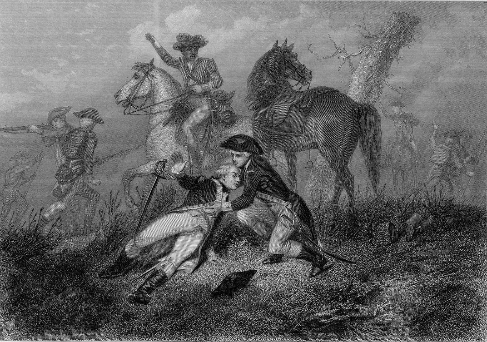
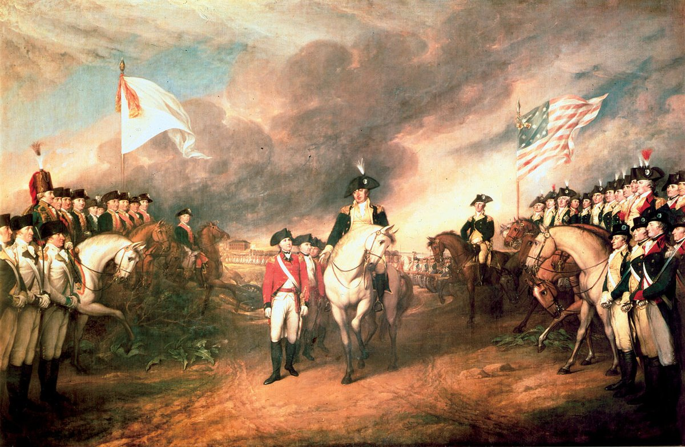
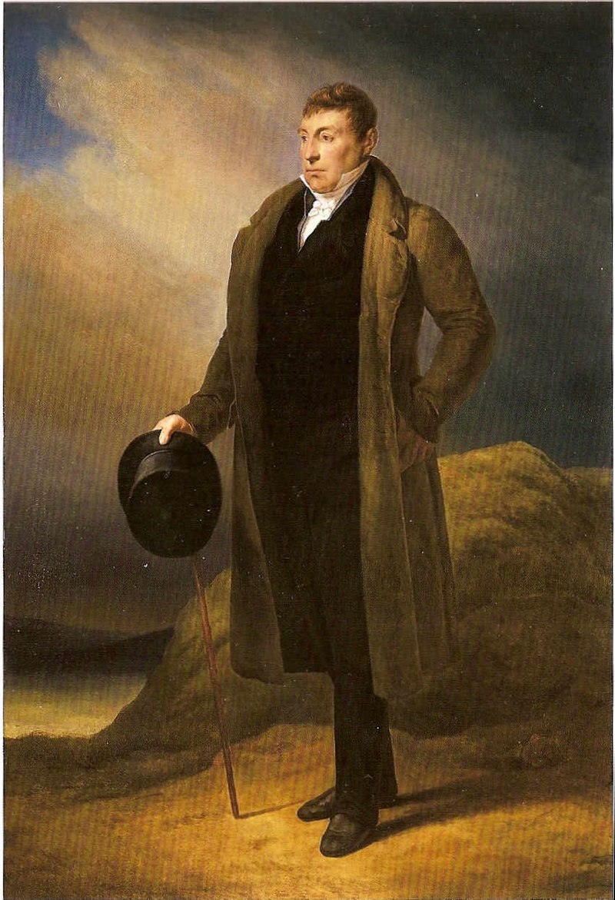

Gilbert du Motier de Lafayette
Teniente General el epic
Lafayette Nacio en el 6 de Septiembre, 1757,
En Chavanaic, Francia.
Lafayette estaba de acuerdo con los Americanos.
A él no le gustaba a los británicos.
Lafayette se navego a America. Era nombrada Teniente General.
Su primera batalla era la Batalla de Brandywine.

Lafayette participo en muchas batallas.
Dirigio tropas en la batalla de Yorktown.

Despues de la guerra, Lafayette se regreso a Francia.
Ayudo en la Revolucion Francesa.

Lafayette tenia una vida interesante.
Murio en el 20 de Mayo de 1834.